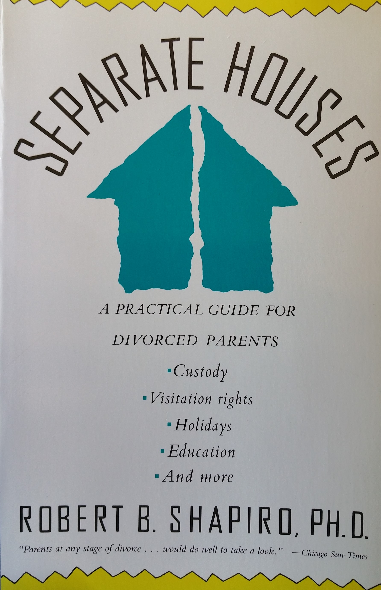

A Practical Guide for Divorcing Parents
Separate Houses: A Handbook for Divorced Parents is a book that advises divorced parents how to work out a manageable custody and visitation plan, and includes tips on adjusting arrangements as the children grow older. Written by Dr. Robert Shapiro in 1990, this content has now been transcribed and transfered online for anyone to view.
All 3 chapters of the book are available to read online here. Each section split into parts that are only a few paragraphs in length for easy viewing.